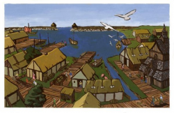
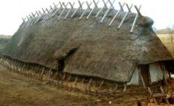
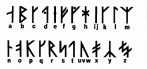
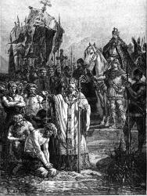
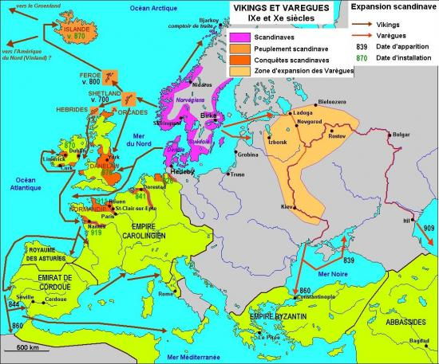
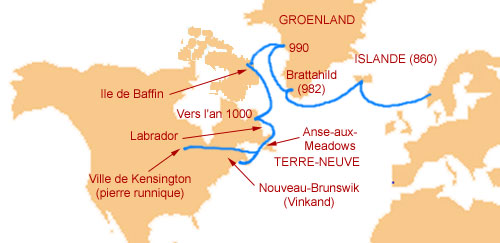
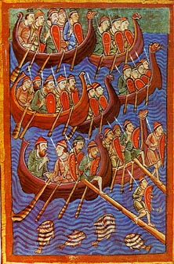
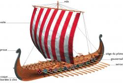

MACLASSE.COM

Au Moyen-âge, les Vikings sont considérés comme des guerriers violents et cruels en raison de la violence de leurs raids. Ce peuple originaire des pays scandinaves comporte aussi de grands marins, des marchands et obéit à des règles sociales bien définies.
 Les Vikings possèdent l'écriture, à partir d'un alphabet particulier : les Runes.
Les Vikings connaissent une expansion démographique vers le Xe siècle, en raison d'un climat favorable, certainement à l'origine des voyages vikings. Leurs nombreux raids et attaques d'églises et de religieux serait une réaction à la christianisation forcée et parfois sanglante à l'époque de Charlemangne contre les peuples saxons et danois.
Les Vikings sont de grands voyageurs et de grands marins. Ils ont effectué de très longs voyages et se sont s'implantés en Europe (Islande, Angleterre, Normandie...). Erik le Rouge puis son fils Leif Erikson ont même atteint l'Amérique vers l'an 1000, bien avant Christophe Colomb. Ils n'ont pas traversé l'Océan Atlantique mais sont passés par le nord, par l'Islande qu'ils ont colonisé, puis en longeant les côtes du groenland.
 Leurs navires, les langskips (ou longships) sont ausi appelés à tort drakkar, terme inventé au XIXe siècle dans la littérature à partir du mot suédois drake (dragon). Ces bateaux possédaient un mat central avec une voile utilisée en mer mais il possédait aussi des rames pour se propulser dans les cours d'eau. On y embarquait les hommes et parfois des chevaux.
 As-tu compris et retenu cette leçon? Es tu capable de répondre à quelques questions?
- D'où sont originaires les Vikings ?
- Comment s'appelle leur alphabet ?
- Comment s'appelle leur navire ?
- Comment sont-ils parvenus en Amérique ?
Les Vikings, originaires des pays scandinaves sont célèbres pour leurs raids et leurs pillages. Ce sont aussi d'excellents navigateurs qui se sont implantés partout en Europe du Nord, en Islande et sont même parvenus jusqu'en Amérique grâce à leurs navires les langskips, aussi appelés drakkars.


Mentions légales / Qui sommes-nous ? / Plan du site
Nos matières : français - mathématiques - histoire - sciences - arts visuels - geographie